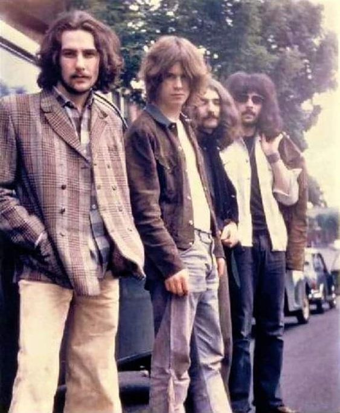

.webp)
Sobre Black Sabbath
Black Sabbath é uma banda britânica de heavy rock formada em Birmingham em 1968 pelo guitarrista/compositor principal Tony Iommi, o baixista/compositor principal Geezer Butler, o vocalista Ozzy Osbourne e o baterista Bill Ward. É uma banda de metal. A banda passou por várias mudanças de formação, mas apenas o guitarrista Iommi esteve presente em todas elas. Originalmente uma banda de blues rock, eles logo adotaram o nome Black Sabbath, incorporaram histórias de terror em suas letras e começaram a usar baixos. Ambos os temas eram predominantes, mas ele também compôs canções que tratam de profecias pós-apocalípticas decorrentes da instabilidade social, corrupção política, perigos do abuso de substâncias e guerra.
Como Tudo Começou...
O Black Sabbath tem uma longa história, com várias tentativas fracassadas antes de a banda finalmente decolar. Tudo começou em 1968 em Birmingham, Inglaterra, quando Ozzy Osbournetinha tinha apenas 20 anos.
Ele era um açougueiro que acabou sendo demitido por agredir um colega com um pedaço de pau após ser assediado. Os meninos então decidem colocar um anúncio na vitrine da Ringway Music anunciando: Ozzy Zig Needs a Gig (semelhante a: Ozzy Needs a Gig/Band).Geezer Butler , que trabalhou como aprendiz de contador e foi integrante da banda Rare Breed e resolveu convidar Ozzy para assumir os vocais.
Naquele período, Tony Iommi e Bill Ward faziam parte de um grupo recém-dissolvido Mythology. Eles também veem um anúncio de Ozzy, que Iommi percebeu ser de um antigo colega de classe.

Os músicos decidiram então formar uma nova banda. A Polka Tulk Blues Band foi originalmente formada pelo vocalista e seus amigos, Geezer Butler e Jimmy Phillips, com a adição do saxofonista Alan Aker Clarke. Seu foco era tocar blues rock. Depois de perder Clarke e Phillips, os membros restantes mudaram o nome da banda para Earth. Inicialmente, eles tocaram um repertório de covers de artistas renomados como Jimi Hendrix, Cream e The Beatles e gravaram inúmeras demos. Em 1969, os músicos se viram ansiosos pela fama e perceberam que precisavam mudar de nome, pois outra banda já havia reivindicado "Earth". Segundo a lenda, Geezer Butler notou uma longa fila se formando do lado de fora do cinema adjacente ao espaço de ensaio. A multidão estava lá para a estreia no Reino Unido de The Three Masks of Terror, intitulado Black Sabbath. Ozzy e Butler então, resolveram escrever uma canção chamada Black Sabbath,inspirados pelo trabalho do ficcionista de horror e aventura, Dennis Wheatley. No entanto, no início da história, houve uma visão do que Butler diz ser uma figura negra parada ao pé de sua cama. De qualquer forma, a composição foi o ponto de partida para a mudança de rumo do grupo, que adotou uma sonoridade e estética mais dark. Então eles decidiram que Black Sabbath seria o nome perfeito para a nova oferta da banda. E assim, no final dos anos 60, tendo como pano de fundo o movimento hippie que dominava a vida cultural, o Black Sabbath deu origem ao heavy metal. Devido ao vício em cocaina de Ozzy Osbourne, o músico acabou sendo despedido da banda e substituído por James Dio. Dio gravou dois discos com o Black Sabbath, que posteriormente mudou sua formação várias vezes, encerrando suas atividades em 2006. Em 2011, a banda voltou. Dois anos depois, gravaram seu último album de estúdio, 13. Entre 2016 e 2017, o Black Sabbath decidiu realizar a The End Tour, encerrando oficialmente a banda. O Início Do Black Sabbath
A Mudança De Nome:
Legado do Black Sabbath
Discografia